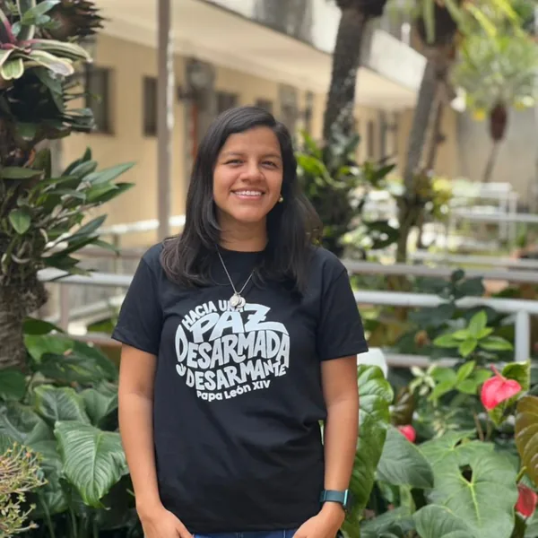
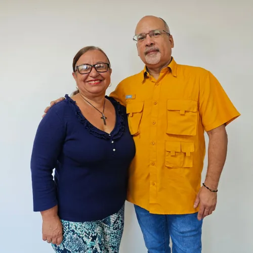
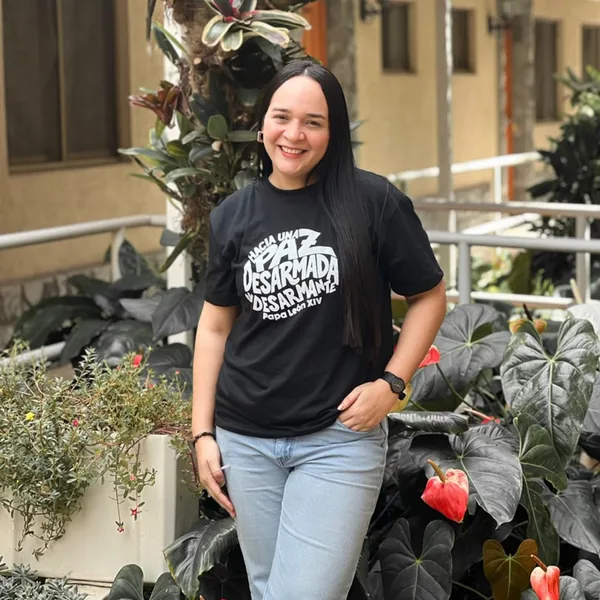
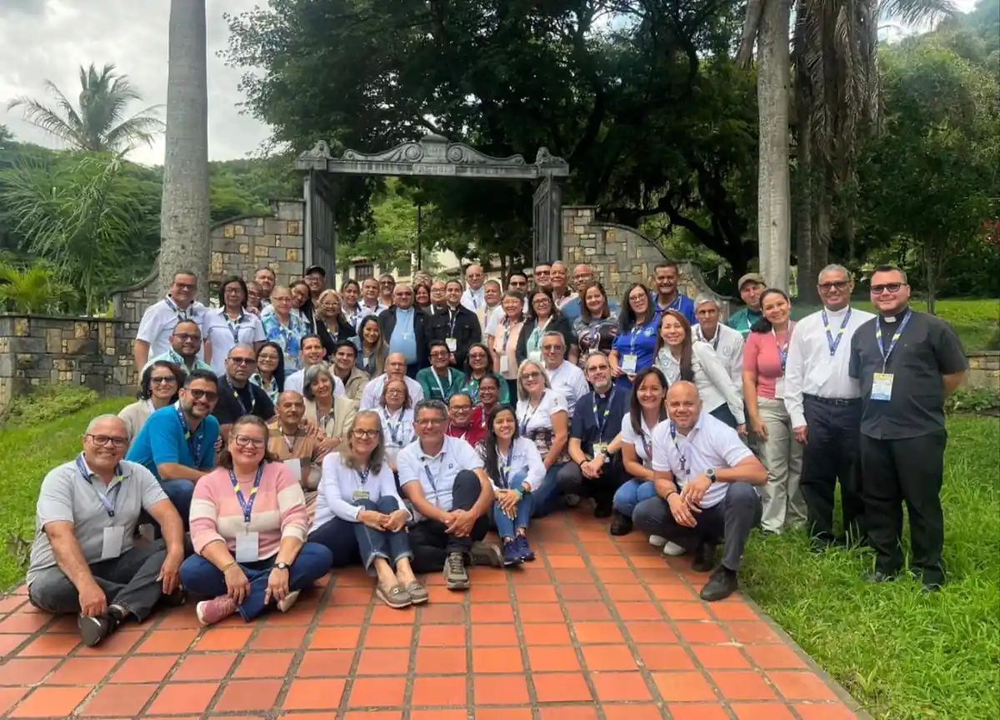

Quiénes somos
Quiénes somos
El Centro de Laicos, Familia y Juventud es una unidad del Secretariado Permanente del Episcopado Venezolano (SPEV). Acompaña a laicos, familias y jóvenes de todo el país.
Qué es el Centro
El Centro es una unidad del SPEV, que es el servicio y órgano ejecutivo de la Conferencia Episcopal Venezolana (CEV). Nació del rediseño del SPEV que aprobó la Asamblea Plenaria de la CEV el 9 de enero de 2023. Rediseño del SPEV
Anima y acompaña a los fieles laicos. También favorece la atención pastoral de los jóvenes, de la familia y de los fieles en general. Lo hace con tres áreas: Laicos, Familia y Juventud.
Su trabajo llega sobre todo a asesores y coordinadores diocesanos, movimientos y asociaciones, que lo llevan a parroquias y familias. Sitio del Centro
Mandato
El Rediseño creó seis centros en el SPEV. El de Laicos, Familia y Juventud es el cuarto. Rediseño del SPEV
Estructura
Tiene tres áreas:
- Laicos.
- Familia y Vida.
- Juventud.
Fuente: Rediseño del SPEV.
El SPEV es un servicio a la CEV y a las circunscripciones eclesiásticas. No es una instancia de gobierno. Las comisiones episcopales son órganos de la CEV. Los centros pertenecen al SPEV. Rediseño del SPEV
Vínculo con las comisiones y las diócesis
El Centro se vincula con tres comisiones episcopales: Laicos y Ministerios, Adolescencia y Juventud, y Familia e Infancia. Acompaña a los secretariados y a otras instancias de las diócesis. Actúa en sinergia con el organismo laical nacional y con la Red de Movimientos Juveniles. Rediseño del SPEV
Cómo se organiza
Cada centro del SPEV tiene un director, nombrado por la Comisión Permanente de la CEV. Los coordinadores de área los nombra el Secretario General. Un centro puede contar con un equipo de asesores. Rediseño del SPEV
El Plan Trienal 2023-2026 fija como objetivo del Centro dinamizar programas de animación, formación y acompañamiento a los referentes de pastoral juvenil, familiar y de laicos de las iglesias locales. Plan Trienal CEV 2023
Lo que hizo el Centro en 2026
- Febrero: celebró con la Pastoral Juvenil la Jornada Nacional de la Juventud, con celebración central el 15 de febrero, y la 39.ª Asamblea Nacional de Pastoral Juvenil, con 34 diócesis presentes. CEV, 23-02-2026
- Marzo: organizó la Semana por la Vida, con tres formaciones virtuales, y la formación misionera de Semana Santa con las Obras Misionales Pontificias. CEV, 13-03-2026
- Junio: juntó en Caracas, del 16 al 18, a más de 70 asesores, según la CEV, de pastoral juvenil, familiar, consejos de laicos y movimientos, en el I Encuentro Nacional de Asesores. CEV, 19-06-2026
- Septiembre: convocó la Asamblea Nacional de Pastoral Familiar, con seis arquidiócesis y veinte diócesis. CEV, 30-09-2026
- Octubre y noviembre: lanzó con la CEV la campaña Abrazo en Familia y convocó el Encuentro Nacional de Laicos, del 13 al 15 de noviembre. CEV, 16-11-2026
Equipo

Saritza RoqueDirectora del Centro y coordinadora de Laicos
Jannet de Rivas y Pedro RivasCoordinadores del Área de Familia
Génesis MartínezCoordinadora del Área de Juventud
Fuentes: sitio del Centro y nota de la CEV del 16 de noviembre de 2026.
El Centro en acción

I Encuentro Nacional de Asesores, Casa Monseñor Ibarra, Caracas, del 16 al 18 de junio de 2026. Asesores de pastoral juvenil, pastoral familiar y laicos posan juntos durante el encuentro. Crédito: Centro de Laicos, Familia y Juventud, CEV. Ver el evento 
I Encuentro Nacional de Asesores, Casa Monseñor Ibarra, Caracas, del 16 al 18 de junio de 2026. Foto de grupo de los asistentes durante las jornadas. Crédito: Centro de Laicos, Familia y Juventud, CEV. Ver el evento 
Asamblea Nacional de Pastoral Juvenil, febrero de 2026. Participantes de la asamblea posan juntos al aire libre. Crédito: Centro de Laicos, Familia y Juventud, CEV. Ver el evento 
Asamblea Nacional de Pastoral Familiar 2025, del 26 al 28 de septiembre de 2025. Participantes de la asamblea reunidos para la foto de grupo. Crédito: Centro de Laicos, Familia y Juventud, CEV. Ver el evento
Cada evento de la agenda tiene su propia galería de fotos.
Contacto
- Dónde estamos
- Centro de Laicos, Familia y Juventud, Secretariado Permanente del Episcopado Venezolano. Avenida Teherán, Urbanización Montalbán, Caracas. Edificio Conferencia Episcopal Venezolana.
- Horario de atención
- Lunes a viernes, de 08:00 a 17:00.
- Canales oficiales
- Telegram · Instagram @centrolfjspev · Threads @centrolfjspev · YouTube